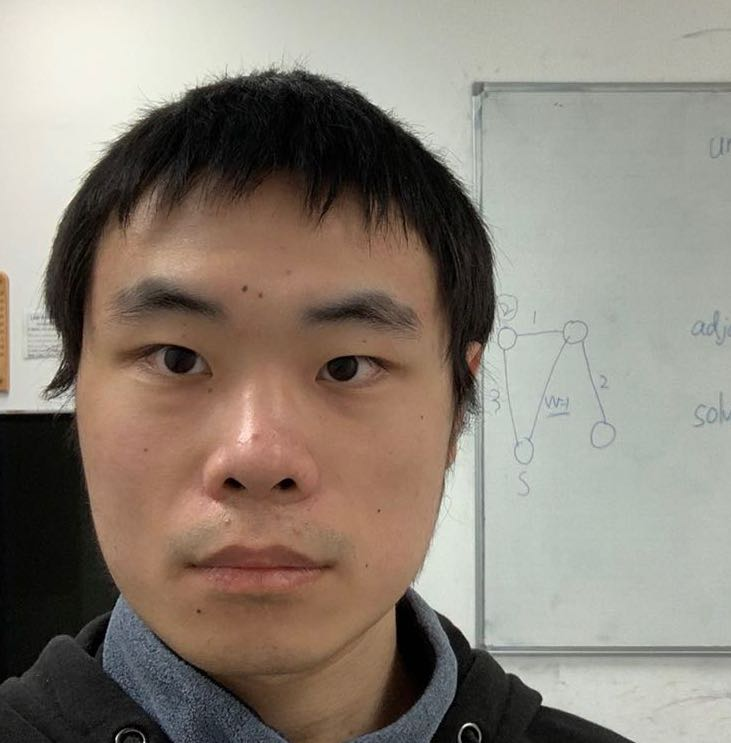

Ph.D. Candidate in Computer Science
University of Oxford
shitong.xu [at] cs.ox.ac.uk
I am a third-year Ph.D. candidate in Computer Science at the University of Oxford, supervised by Prof. Niki Trigoni and Prof. Andrew Markham. I obtained my Master and Bachlor degree in Imperial College London, where I completed my Master thesis under the supervision of Prof. Ben Glocker.
During my PhD, my research focuses on integrating diverse modalities — including audio, text, and electroglottographic (EGG) signals — to improve how machines perceive, represent, and generate human voice characteristics in real-world environments. More broadly, my research interests include:
Target Speaker Extraction through Comparing Noisy Positive and Negative Audio Enrollments.
Shitong Xu, Yiyuan Yang, Niki Trigoni, Andrew Markham.
Neural Information Processing Systems (NeurIPS), 2025
Efficient and Microphone-Fault-Tolerant 3D Sound Source Localization.
Yiyuan Yang, Shitong Xu, Niki Trigoni, Andrew Markham.
Interspeech 2025
SPEAR: Receiver-to-Receiver Acoustic Neural Warping Field.
Yuhang He*, Shitong Xu*, Jiaxing Zhong, Sangyun Shin, Niki Trigoni, Andrew Markham.
2024
CLIP-Diffusion-LM: Apply Diffusion Model on Image Captioning.
Shitong Xu
2022
Deep Learning for Healthcare
Physics Informed Machine Learning